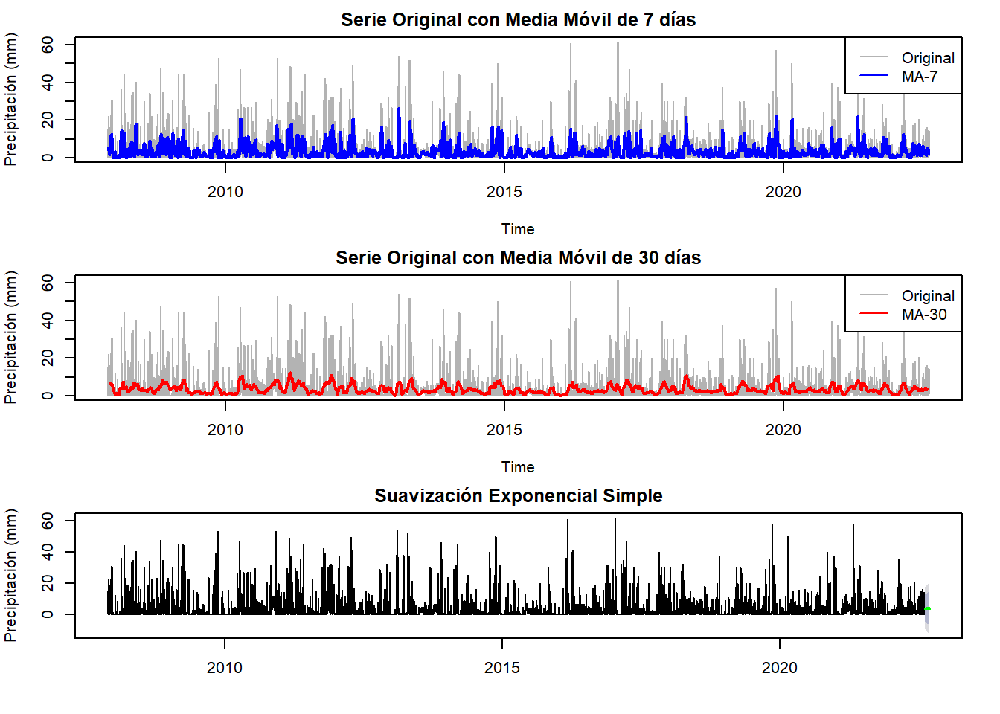
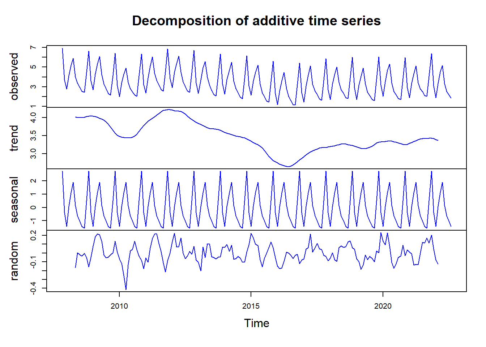

Sección 5 Metodologia
Esquematizar los modelos convencionales de series de tiempo a través de la metodología Box-Jenkins para encontrar patrones que nos permitan predecir futuras observaciones.
## Min. 1st Qu. Median Mean 3rd Qu. Max.
## 0.0000 0.0000 0.4055 0.8853 1.5261 4.1352La serie tiene valores mínimos en 0 indicando días sin precipitación y un máximo de 4.13 equivalente a una precipitación de aproximadamente 62 mm.
La mediana es de 0.41 e indica que la mayoría de los días tienen precipitaciones bajas, y la media es de 0.89, indicando algunos eventos extremos.
Code
##
## Augmented Dickey-Fuller Test
##
## data: ts_lluvia_log
## Dickey-Fuller = -14.113, Lag order = 17, p-value = 0.01
## alternative hypothesis: stationaryla prueba de Dickey-Fuller aplicada a la serie diferenciada, muestra un estadístico negativo y un p-valor menor a 0.01 en todos los rezagos y tipos de prueba. Estos resultados permiten rechazar la hipótesis nula de no estacionariedad, lo que indica que la serie es estacionaria tras la transformación logarítmica.

El gráfico de ACF muestra una autocorrelación significativa en los primeros rezagos, lo que indica una dependencia temporal a corto plazo y se observan picos de autocorrelación que exceden las bandas, indicando patrones estacionales en la serie. La caída gradual de la autocorrelación a lo largo del tiempo indica una posible tendencia estacional de largo plazo. Ademas, los rezagos alrededor de 365 días muestran cierta correlación, lo que puede ser indicativo de un patrón anual en la precipitación.
 La gráfica de la PACF presenta un pico alto en el primer rezago, lo que indica una autocorrelación significativa con el valor inmediato anterior de la serie. A partir del segundo rezago, los valores caen rápidamente dentro de las bandas lo que indica una disminución de la autocorrelación para rezagos mayores. Este comportamiento es consistente con un posible modelo autorregresivo de bajo orden, como un AR(1). La falta prnunciados en rezagos más altos respalda la hipótesis de que no existe una correlación significativa de largo plazo en la serie.
## Series: ts_lluvia_log
## ARIMA(2,0,1) with non-zero mean
##
## Coefficients:
## ar1 ar2 ma1 mean
## 1.0953 -0.1984 -0.7475 0.8856
## s.e. 0.0517 0.0295 0.0479 0.0297
##
## sigma^2 = 0.7934: log likelihood = -7004.13
## AIC=14018.26 AICc=14018.27 BIC=14051.21
##
## Training set error measures:
## ME RMSE MAE MPE MAPE MASE ACF1
## Training set -0.0001313018 0.890378 0.7134034 -Inf Inf 0.7125717 5.842737e-05El modelo ajustado es un ARIMA(2,0,1), que parece capturar de manera adecuada la estructura temporal de la serie log-transformada de precipitación diaria, los coeficientes para las componentes autorregresivas ar1 = 1.0953 y ar2 = -0.1984 y la componente de media móvil ma1 = -0.7475, son significativos y presentan errores estándar bajos. Esto indica que las estimaciones son precisas y que el modelo es capaz de explicar bien la la serie temporal, el término de media distinta de cero - mean, indica que la serie transformada tiene un promedio positivo constante, lo que es coherente con los patrones de precipitación observados. En cuanto a los criterios de información, se obtuvieron valores relativamente bajos: - AIC = 14018.26 - BIC = 14051.21 Estos valores muestran un buen ajuste del modelo, ya que minimizan el balance entre la complejidad del modelo y su capacidad para explicar la variabilidad de los datos.
Por otro lado, las metricas de error para el conjunto de entrenamiento muestran un buen desempeño del modelo: - ME (Error Medio) cercano a cero (-0.00013), lo que indica un sesgo mínimo en las predicciones. - RMSE (Raíz del Error Cuadrático Medio) de 0.890, representando el error promedio en la escala logarítmica de la precipitación. - MAE (Error Absoluto Medio) de 0.713, indicando que el error típico es bajo en comparación con la variabilidad de la serie. - MASE (Error Absoluto Medio Escalado) de 0.713, indicando que el error del modelo es comparable al de un modelo simple basado en el promedio.
La baja autocorrelación del primer rezago de los residuos (ACF1 ≈ 0) evidencia que los residuos del modelo son independientes y se comportan como ruido blanco.
##
## Ljung-Box test
##
## data: Residuals from ARIMA(2,0,1) with non-zero mean
## Q* = 748.1, df = 727, p-value = 0.2858
##
## Model df: 3. Total lags used: 730Test de Ljung-Box:
- p-valor = 0.2858: El p-valor es mayor a 0.05, lo que significa que no podemos rechazar la hipótesis nula de que los residuos son independientes. Los residuos no presentan autocorrelación significativa, lo que valida que el modelo ajustado es adecuado.
Interpretación diagnistico del residuo:
los residuos del modelo ARIMA(2,0,1) indican que el ajuste es adecuado. El gráfico de residuos muestra un comportamiento aleatorio, sin patrones evidentes indicando que el modelo ha capturado la estructura temporal de la serie. La función de autocorrelación (ACF) confirma esta observación, ya que la mayoría de los residuos se encuentran dentro de las bandas, lo que indica la ausencia de autocorrelación significativa, además, el histograma muestra que los residuos tienen una distribución aproximadamente normal, aunque se observa una ligera asimetría hacia la derecha.
Code
##
## Jarque Bera Test
##
## data: modelo1$residuals
## X-squared = 882.29, df = 2, p-value < 2.2e-16Los resultados de la prueba de Jarque-Bera indican que los residuos del modelo ARIMA(2,0,1) no siguen una distribución normal, lo cual es respaldado por el p-valor bajo. Aunque la no normalidad es común en series temporales con eventos extremos o alta variabilidad, sin embargo , la independencia de los residuos (según el test de Ljung-Box) indica que el modelo sigue capturando adecuadamente la estructura temporal de la serie, aunque los residuos presentan desviaciones de la normalidad.
Code
##
## Box-Ljung test
##
## data: modelo1$residuals
## X-squared = 1.8363e-05, df = 1, p-value = 0.9966La prueba de Ljung-Box confirma que los residuos del modelo ARIMA no presentan autocorrelación significativa, lo que indica que los residuos se comportan como ruido blanco.
Code

## [1] 0.7134034## [1] 0.890378El modelo ARIMA proporciona un buen pronóstico, con errores relativamente bajos tanto en el MAE como en el RMSE, pero la diferencia entre estas dos métricas indica que podrían estar presentes algunos valores atípicos en los datos que afectan la precisión del modelo.